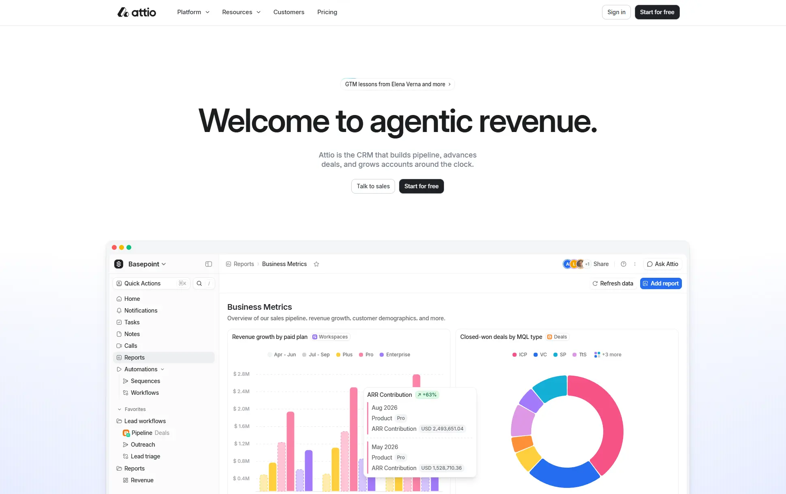

Attio
- Многостраничный
- Сервисы и приложения
- Командная работа
- ИИ-сервисы
- Продуктовым командам
- Маркетологам
- Минимализм
- Строгий B2B
- Светлая тема
- Нейтральный фон
- Микроанимации
- Интерфейс-диалог
- Next.js
- Tailwind CSS
- Storyblok
- Vercel
- Cloudflare
- Google Tag Manager
- Mixpanel
- Intercom
- Английский язык
- Великобритания
- Действующий сайт

Что это
Сайт CRM-сервиса Attio для команд продаж: клиенты, сделки и переписка собраны в одном месте, а ИИ-агенты сами строят воронку и подсказывают следующие шаги. Продукт показан через живой интерфейс с отчётами и графиками, без стоковых картинок. Аккуратный, внимательно свёрстанный сайт умной CRM с ИИ-агентами под капотом. Много приятной глазу мелкой графики и микроанимаций.
Что смотреть в первую очередь
Смотреть первый экран и окно демо: отчёты, круговая диаграмма и панель Ask Attio показывают продукт без скриншотов. Дальше — тарифы и страницу про «архитектуру агентной выручки» (/architecture).
Приёмы
- Микроанимации
- Интерфейс-диалог
Интересные факты
- Первый экран держится на одном очень крупном заголовке и двух кнопках; остальное место отдано окну продукта с отчётами, графиками и панелью Ask Attio.
- Мелкие анимации сдержанные: у ссылок и кнопок в разметке прописаны короткие переходы (transition, duration-150 и 250) и подчёркивание, которое появляется при наведении.
- Светлая и тёмная темы переключаются классом theme на странице; если тему не выбрали вручную, скрипт берёт системную настройку.
- В консоли браузера оставлена пасхалка: в коде страницы есть отдельный модуль ConsoleEasterEggClient.
- Сайт собран на Next.js: сервер отдаёт готовую разметку, а интерактивные части подгружает кусками из /_next/static.
- Контент хранится в CMS Storyblok — картинки и обложка для соцсетей приходят с a.storyblok.com, а сама CMS разрешена в политике безопасности страницы.
- В robots.txt открыты ИИ-краулеры (GPTBot, ClaudeBot, PerplexityBot, OAI-SearchBot), но закрыты CCBot, Bytespider, YouBot и Cohere — видимость в ответах ИИ настраивали осознанно.
Паспорт
- Домен
- attio.com
- Тип сайта
- Многостраничный
- Категории
- Сервисы и приложения
- Подкатегории
- Командная работа, ИИ-сервисы
- Для кого
- Продуктовым командам, Маркетологам
- Стиль
- Минимализм, Строгий B2B
- Язык
- Английский
- Страна
- Великобритания, Лондон
- Автор
- Attio Ltd
- Год
- 2026
- Добавлен в коллекцию
- 10.11.2026
Палитра
-
#FCFEFE— 93% кадра -
#D0D1D1— 1% кадра -
#212323— 1% кадра -
#B1B1B2— 1% кадра -
#F65385— 1% кадра
- Режим
- Светлая
- Цвет фона
- Нейтральный
Технологии
- Next.js
- Tailwind CSS
- Storyblok
- Vercel
- Cloudflare
- Google Tag Manager
- Mixpanel
- Intercom